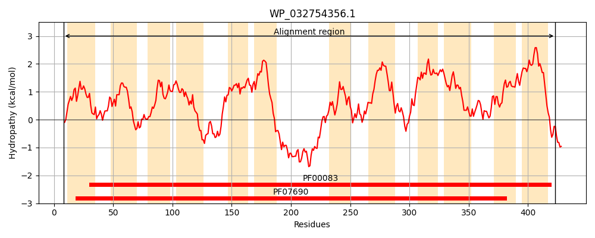
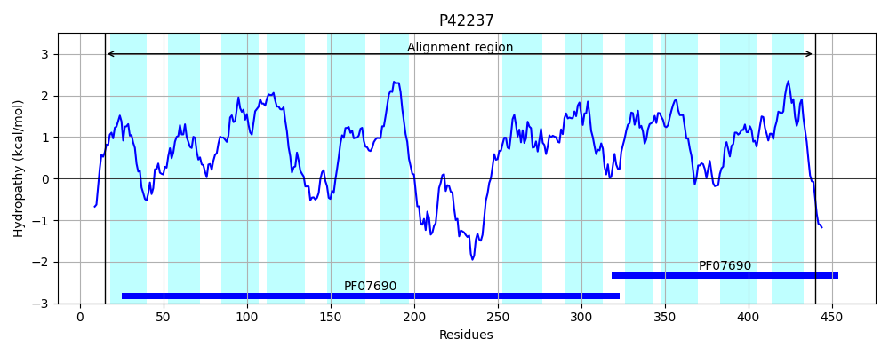
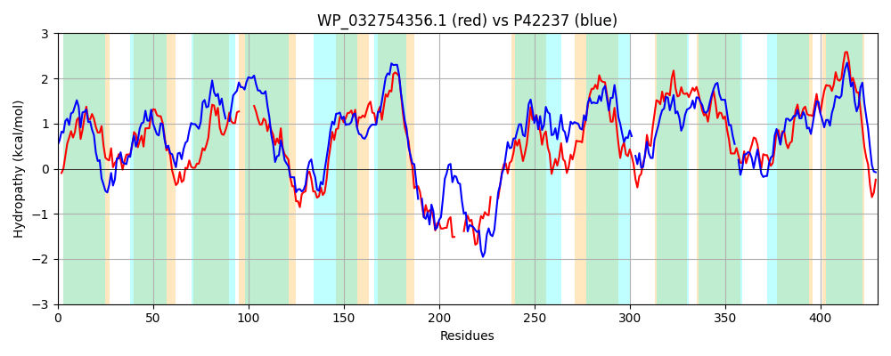

Hit Accession: P42237
Hit TCID: 2.A.1.14.1
Hit Description: gnl|BL_ORD_ID|10449 gnl|TC-DB|P42237|2.A.1.14.1 Probable glucarate transporter (D-glucarate permease) - Bacillus subtilis.
Mach Len: 430
e:0.000000
Query TMS Count : 12
Hit TMS Count: 12
TMS-Overlap Score: 9.500000
Predicted Substrates:CHEBI:14311;glucarate(2-)
BLAST Alignment:
Score: 702 , Bit scores: 275 bits, E-value: 5.3e-88, Alignment length: 430, Percentage identity: 36
Query: 8 TRIRWWIAGLMWLAIAINYIDRTVLSAAAPHLIDELKLDPEMMGFIMAAFFWSYSLLQIPAGWFADRFGQKKGLGIAVAWWSIATSMMGVATGFKS-------LLALRLALGVGEAAAYPSNAGIAARWFPDKERATVSGLFDSASKFGGAIAMPLIVWMIYTFDWRLTFLIIGSVGILWVIAWYFIYAENPEEHKRISASEVRLIRDG----QKQHHGDKTVLPMKW---YKLLRYRNIWAMCIGFFTINYTSYFFITWLPTYLVKEKGMDFIKMGMVAALPLLCGMVIEIFAGWASDRLVHKKVLSLTATRKLFLTIGLIMALCIGFAPFTDSVFMTVFLLCVAKSGTTVAASQVWALPGDVAPKNSVSIVAGLQNTVSNMGGAVGPIITGAIVAATGSFNWALIFSAILVVVGIINYLFLMGKIEPI 423
T +RW+I +++L +INY DR LS + +L LD MG++ +AF W+Y + Q+P GW DRFG K + +++ +WS T + G A GF S L ALR +G+ EA ++P N + A WFP ER T S F+SA F I PL+ W+ ++F W F+++G GIL + W E P++H +++ +E+ I G K KW +LL R + + I + I +YFF+TW P YLV+ +GM ++ G VA+LP LCG + G SD L+ KK SLT RK+ + G++++ + +TDS ++ V ++ +A G A WA+ D +PK + GL NT N+ PII G IV ATGSFN AL+F + I++YL L+G I+ +
Sbjct: 15 TSVRWFIVFMLFLVTSINYADRATLSITGDSVQHDLGLDSVAMGYVFSAFGWAYVIGQLPGGWLLDRFGSKTIIALSIFFWSFFTLLQG-AIGFFSAGTAIILLFALRFLVGLSEAPSFPGNGRVVASWFPSSERGTASAFFNSAQYFAIVIFSPLMGWLTHSFGWHSVFVVMGIAGILLAVIWLKTVYE-PKKHPKVNEAELAYIEQGGGLISMDDSKSKQETESKWPYIKQLLTNRMLIGVYIAQYCITTLTYFFLTWFPVYLVQARGMSILEAGFVASLPALCGFAGGVLGGIVSDILL-KKGRSLTFARKVPIIAGMLLSCSMIVCNYTDSAWLVVVIMSLAFFGKGFGALG-WAVVSDTSPKECAGLSGGLFNTFGNIASITTPIIIGYIVNATGSFNGALVFVGANAIAAILSYLLLVGPIKRV 440 | Protein Hydropathy Plots: |
|---|
|  |  |
Pairwise Alignment-Hydropathy Plot:
|
|---|
|  |